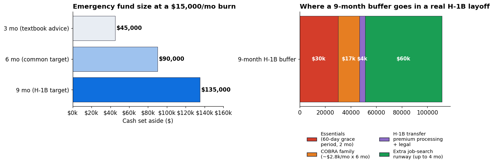
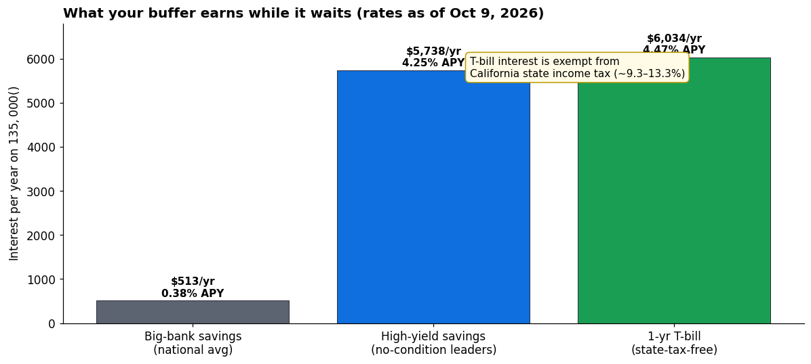
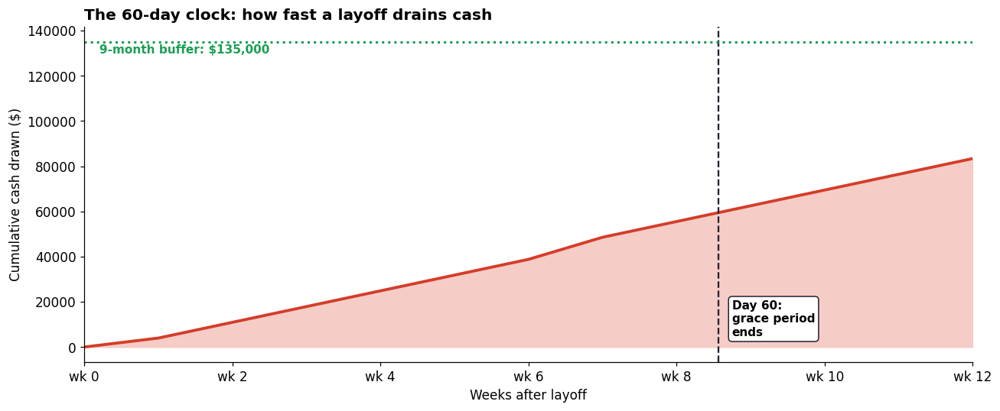

For a citizen, getting laid off is a financial problem. For an H-1B holder, it's a financial problem with a 60-day fuse on your right to stay in the country. That's why the textbook "3–6 months of expenses" advice underserves you — it was written for people who can take six months to find a job.
On an H-1B, you get 60 days to find a new sponsor or change status, a COBRA bill that can top $3,000 a month for a family, a ~$2,800 premium-processing fee just to keep the transfer moving fast, and unemployment insurance that varies by state and is often unavailable. Your emergency fund needs to be built for that reality, not the textbook one.
Why 3 months isn't enough on H-1B
The standard emergency-fund logic assumes you can stretch a job search over several months with unemployment checks filling part of the gap. An H-1B layoff breaks every one of those assumptions:
- The 60-day grace period. Lose your job and USCIS gives you up to 60 days (or until your I-94 expires, whichever is shorter) to find a new sponsor, change status, or leave. You don't get to job-hunt at leisure — every week without an offer burns both cash and legal runway. (Note: there is a DHS proposal circulating to shrink or remove this grace period. It isn't final, but treat the 60 days as a maximum, not a guarantee.)
- Unemployment insurance is murky. Eligibility varies by state, and many H-1B holders are denied or never file — don't budget a layoff assuming UI checks will show up. (This is an earned benefit you've paid into; if you're laid off, check your state's rules, but never count on it in advance.)
- Your fixed costs don't shrink when the paycheck stops. A Bay Area household burning $15,000/month still burns most of that while unemployed — rent, car, insurance, kids. COBRA alone runs roughly $2,500–3,000/month for family coverage.
- Transfers cost money. Premium processing for an I-129 is about $2,800, and a lawyer consult to map your options is several hundred more. These aren't optional luxuries — speed is the whole game when the clock is 60 days.
Add it up and a 3-month fund barely covers the grace period plus transfer costs, with nothing left for the search itself.
The math: sizing the buffer
Take a Bay Area H-1B household with a $15,000/month essential burn:
- 3 months ($45,000): covers the 60-day grace period and transfer fees. The job search itself is unfunded. One slow month and you're rationing.
- 6 months ($90,000): covers the grace period, transfer, and a few months of search. Adequate if you're employable in 90 days.
- 9 months ($135,000): covers the grace period ($30k essentials), six months of COBRA (~$16.8k), premium processing and legal (~$4.5k), and up to 4 months of additional job-search runway ($60k). This is the H-1B target.

The visa is why the number is bigger than the textbook says. Nine months sounds like a lot until you price the 60 days.
Where to park it: the tier system
Cash that's wrong-parked is cash that's shrinking. A $135,000 buffer earning the 0.38% national-average savings rate makes $513 a year. The same buffer in the right accounts makes over $5,700 — that's a free month of COBRA.
Tier 1 — One month of essentials in checking. Instant access, zero yield, zero friction. This is the "the car died on the same day as the layoff" money.
Tier 2 — Two to three months in a high-yield savings account. As of October 2026, no-condition leaders pay ~4.25% APY (Pibank, Elevault), against a 0.38% national average. FDIC-insured, liquid in a day or two. This is the grace-period money — the 60 days you'll actually need it.
Tier 3 — The rest in a Treasury-bill ladder. As of October 9, 2026, 3-month T-bills yield ~4.25%, 6-month ~4.32%, 1-year ~4.47%. Buy 3- and 6-month bills in rotation so a rung matures every month or two. Two killer advantages over savings accounts: T-bill interest is exempt from California state income tax (worth ~9.3–13.3% more in your pocket at high Bay Area marginal rates), and bills can't be spent on impulse — the money is out of sight.

Money-market funds (Treasury or government funds at your brokerage) work as an alternative to Tier 3 — slightly simpler, slightly lower yield, still mostly state-tax-exempt if they're Treasury-backed.
The 60-day clock, in cash
Here's roughly how fast the buffer drains when a layoff actually hits — essentials, COBRA, the attorney consult, and the premium-processing fee, week by week:

Day 60 arrives with roughly $35,000–40,000 of the buffer gone — before you've paid a single month of post-grace-period rent. The fund exists so that day 61 is a planning problem, not a panic.
What not to do
- Don't raid the 401(k). A withdrawal costs income tax plus the 10% early-withdrawal penalty (if under 59½), and a 401(k) loan comes due in full when you leave the employer — exactly the moment you can't pay it. Build the buffer with new savings, not retirement money.
- Don't count RSUs as the buffer. Your buffer should not be in the same stock that just laid you off. Vested RSU value can drop 30%+ in a bad quarter — the same quarter layoffs happen. Sell vested shares on schedule, diversify, and keep the buffer in cash equivalents.
- Don't hold the whole buffer in checking "for safety." Safety is the point of Tiers 2 and 3 — they're FDIC-insured or Treasury-backed, not risky. The 0.38%-vs-4.25% gap costs the example household over $5,000 a year.
- Don't skip health coverage math. COBRA is expensive, but losing coverage and getting hit with one ER bill during unemployment is worse. Price COBRA against ACA marketplace plans during the special enrollment period a job loss triggers — for many families the marketplace wins.
- Don't let the visa emergency push you into bad decisions. Desperation is when people sign exploitative consulting-body-shop contracts or take unauthorized side work. The buffer's real job is buying you the calm to make clean decisions under the 60-day clock.
Takeaways
- The textbook 3–6 months was written for citizens with UI and no deportation clock. On H-1B, 9 months of essentials is the real target.
- Price the layoff before it happens: 60 days of burn + COBRA + ~$2,800 premium processing + legal. That's the floor, not the fund.
- Tier the cash: 1 month checking, 2–3 months HYSA (~4.25% APY, Oct 2026), the rest in a T-bill ladder (state-tax-free in California, maturing monthly).
- Never let the buffer live in your employer's stock, and never borrow it from your 401(k).
- Revisit the fund every raise, every rent hike, every kid — the burn number moves, so the target moves with it.
Not tax, legal, or investment advice. Rates and figures are as of October 2026 and change; verify current numbers before acting. Immigration questions go to an immigration attorney — always.